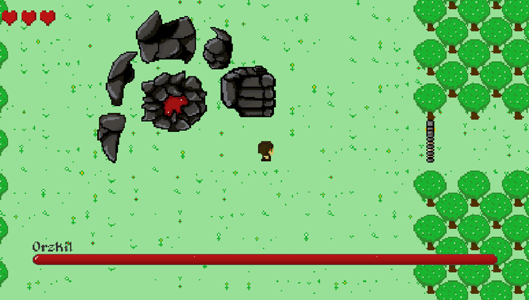
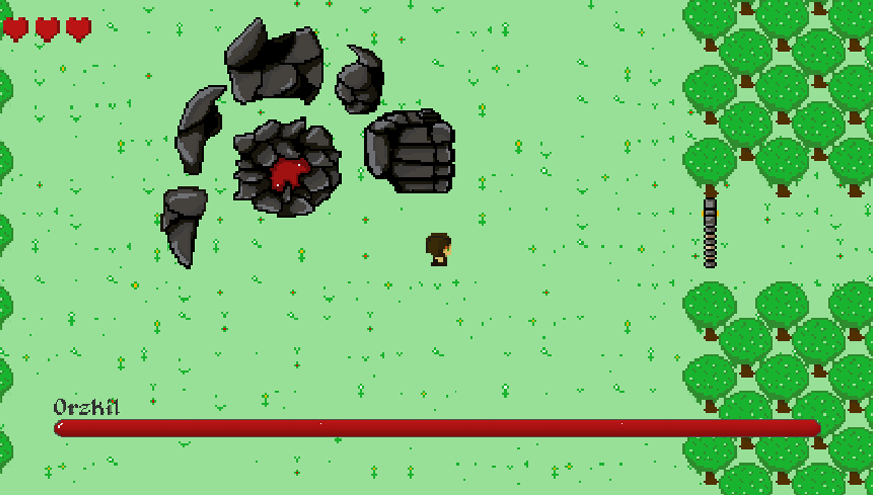

Summary
Secret of Malarith is a top-down 2D RPG made in Unity. It was made in a group of three, for my UAL Level 3 Game Design Final Major Project submission at City of Wolverhampton College. For the assignment, we were tasked to create a 2D game using an engine such as Unity or UE4, we decided to use Unity as I am more familiar with programming using Unity and C#. We were also required to keep a development log (reflective journal) throughout the development of the game, which can be found here. My role on the team was the programmer, Mitchell Best did all of the audio for the game and Tom Rafferty did the art for the game.
Features
- Character Controller
- Inventory System
- Saving and Loading
- Multiple Enemy Types
- Two Bosses
- Quest System
- Open World
What I learned
I learned a lot about working in a team throughout the development of Secret of Malarith, and how important it is for each team member to keep up with the rest. I also learned a lot about project management and keeping code clean.